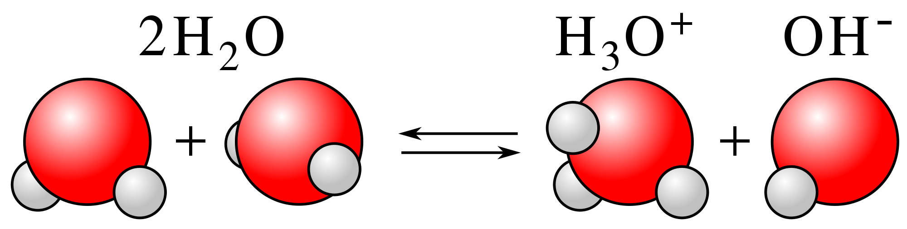

We often hear about things being acidic and basic, but what really is an acid and what is a base? It turns out that nearly every liquid you come across is acidic or basic. The terms encompass so much that there are multiple definitions of what consistitutes and acid and what constitutes a base. In this post, we're going to go over two of these definitions.
Dissociation and pH
A vital concept in acid/base chemistry is that of dissociation. The term means what it sounds like: when a substance dissociates, it splits up into smaller parts. For example, table salt, NaCl, dissociates into the `Na^+` and `Cl^-` ions when added to water.
`NaCl +H_2O rArr Na^+ +Cl^- + H_2O`
As we'll learn in this post, acids and bases can be defined by how their dissociation affects a solution. An acid is a substance that increases the acidity of a solution, whereas a base is a substance that increases the basicity of a solution. The measure of acidity and basicity is based off the pH Scale, which is a logarithmic scale that demonstrates how acidic or basic a particular substance is. Just like molarity, pH is a property of a solution.
On the pH scale, a pH of 7 indicates neutrality i.e neither acid nor base. Pure water is an example of this, where the solution of pure water is neither acidic or basic. As pH decreases from 7, the solutions become more acidic. On the opposite end of the spectrum, as the pH increases, the solution becomes more basic. An important note is that the pH scale is a logarithmic scale, which means that each whole number difference corresponds to a factor of 10. A solution with pH 4 is 10 times more acidic than one with pH 5, and 100 times more acidic than one with pH 6!
The pH of a solution is calculated by using the concentration of `H^+` in the following definition:
pH=`-log[H^+]`
Where `[H^+]` is the concentration of `H^+`.
While pH is the most commonly used metric, it is sometimes convenient to use pOH. pOH is defined as such:
pOH=`-log[OH^-]`
Where `[OH^-]` is the concentration of `OH^-`, called the Hydroxide Ion.
The pOH scale is just the inverse of the pH scale. A solution with a pOH of 1 is a highly basic solution whereas one with a pOH of 14 is a highly acidic one. Everything is just the opposite of the pH scale.
pH and pOH are related by the following equation:
pH + pOH = 14
This makes a lot of sense. As `[H^+]` increases, the pH decreases and the solution becomes more acidic. If you're ever given pOH, I suggest you convert it to pH first to save yourself from unnecessary complications.
Here's a simulation of pH. First, play around with the macro option and see how adding water to acid affects the pH. Second, play around in the micro level and pay attention to the `(H_3O^+)/(OH^-)` ratio as you increase the acid/base.
Arrhenius Definition
The Arrhenius Definition of acids and bases is the simplest and works for a good portion of cases. An Arrhenius Acid is a substance that, when added to water, increases the concentration of `H^+` ions. Notice that the `H^+` ion is just a proton! Hydrogen is comprised of 1 proton and 1 electron by definition. Once we remove the electron, the `H` atom becomes an `H^+` ion which is just a proton.
When an Arrhenius acid is added to a solution, the acid molecule dissociates to give off `H^+`. The `H^+` then proceeds to combine with water molecules to form `H_3O^+`, the Hydronium Ion. You'll most likely see `H^+` and `H_3O^+` used interchangeably for this reason.
Hydrochloric Acid (HCl) is an Arrhenius acid since it gives off `H^+` ions in water by the following dissociation:
`HCl+H_2O rArr H_3O^+ + Cl^-`
The HCl molecule effectively breaks apart into `H^+` and `Cl^-` ions when added to water. This is the defining property of Arrhenius Acids.
On the other hand, an Arrhenius Base is one that dissociates in water to give off `OH^-` ions. For example, NaOH is an Arrhenius base:
`NaOH rArr Na^+ + OH^-`
In summary, an Arrhenius Acid dissociates to increase the concentration of `H^+` in solution whereas an Arrhenius Base dissociates to increase the concentration of `OH^-` in solution.
Bronsted-Lowry Definition
Sometimes the Arrhenius definition of acids and bases isn't enough. For example, ammonia (`NH_3`) is a base with pH 11, but does not contain any oxygen atoms to form `OH^-` to dissociate. This conflicts with the Arrhenius definition of a base, in which a base must dissociate `OH^-`.
Ammonia is an example of a base that doesn't fit the Arrhenius definition of acids and bases. The Bronsted-Lowry (BL) model expands the definition of acids and bases to the following:
A BL acid is one that donates protons.
A BL base is one that accepts protons.
Notice that BL Acids are still Arrhenius Acids, but Arrhenius Acids are not necessarily BL Acids. The converse is true for bases. HCl is still a BL acid since it donates a proton in the form of `H^+`. Conversely, NaOH is still a BL base as the `OH^-` dissociated from it can accept a proton to form `H_2O` in a neutralization reaction (see bottom of post).
Can you see why `NH_3` is considered a BL base? Ammonia can accept a proton through the following reaction:
`NH_3 + H^+ rArr NH_4^+`
In summary, a BL acid is a proton donor and a BL base is a proton acceptor.
Strong Acids and Bases
A strong acid or base is defined as an acid or base that dissociates completely in solution. Hydrochloric Acid (HCl) is a strong acid because when it's added to water, all of the HCl molecules dissociate to form `H^+` and `Cl^-` ions. Sodium Hydroxide (NaOH) is a strong base as it dissociates into `Na^+` and `OH^-` ions in solution. There are in total 7 strong acids and 8 strong bases:
| Strong Acids |
Strong Bases |
| `HCl` |
`NaOH` |
| `HBr` |
`KOH` |
| `HI` |
`LiOH` |
| `HClO_4` |
`RbOH` |
| `HClO_3` |
`CsOH` |
| `H_2SO_4` |
`Ca(OH)_2` |
| `HNO_3` |
`Ba(OH)_2` |
|
`Sr(OH)_2` |
We have yet to cover the naming system of chemicals, so for now here are the names of some of the common strong acids and bases:
| Strong Acid/Base |
Name |
| `HCl` |
Hydrochloric Acid |
| `HBr` |
Hydrobromic Acid |
| `HClO_4` |
Perchloric Acid |
| `H_2SO_4` |
Sulfuric Acid |
| `HNO_3` |
Nitric Acid |
| `NaOH` |
Sodium Hydroxide |
| `KOH` |
Potassium Hydroxide |
| `Ca(OH)_2` |
Calcium Hydroxide |
In general, it's a good idea to stay away from strong acids and bases as they're usually quite dangerous to handle. An easy way of memorizing the strong bases is to take a look at the periodic table: the strong bases are comprised of the first 5 alkali metals + Ca, Sr, and Ba combined with `OH^-`.
For fun, let's write out the dissociations of some of these acids so that we can see what they dissociate into:
`HCl + H_2O rArr H_3O^+ + Cl^-`
`HClO_4 + H_2O rArr H_3O^+ + ClO_4^-`
`H_2SO_4 + H_2O rArr H_3O^+ + HSO_4^-`
`HNO_3 + H_2O rArr H_3O^+ + NO_3^-`
`NaOH rArr Na^+ + OH^-`
`Ca(OH)_2 rArr Ca^(2+) + 2OH^-`
Notice that the only things that dissociate off the molecule are the `H^+` and `OH^-` ions. This is the ions after dissociation are polyatomic and are unlikely to dissociate any further. Additionally, notice that the bases with multiple OH groups (`Ca(OH)_2`) dissociate all of their `OH^-`.
Weak Acids and Bases
Weak acids and bases are acids and bases that do not fully dissociate. For example, if I were to add an amount of `CH_3COOH`, acetic acid, into water, only some of it would dissociate into `H^+` and `CH_3COO^-` whereas most would remain as `CH_3COOH`. One common weak acid is `CH_3COOH`, acetic acid. The vinegar you have in your kitchen is a diluted acetic acid solution. On the other hand, a common weak base is `NH_3`, ammonia.
Something interesting to take note of is that the harm of an acid/base does not have to do with the strength of the acid. The strength of an acid is related to how much of it will dissociate. The stronger the acid, the more of it will dissociate. The danger of certain acids and bases has to do with what the acid/base dissociates into.
Here's a simulation that demonstrates some of the properties of acids and bases. I recommend you play around with the introduction and look at the different solutions and their pHs.
Titrations

When an acid and base come into contact with each other, they undergo a neutralization reaction. This is seen in the reaction of HCl and NaOH:
`HCl + NaOH rArr Na^+ + Cl^- + H_2O`
Where there would usually be `H^+` from hydrochloric acid and `OH^-` from sodium hydroxide is now a water molecule. This is because the `H^+` and `OH^-` ions will combine to form a single water molecule:
`H^+ + OH^- rArr H_2O`
Whenever there is an acid spill, an appropriate amount of base is added to the spill in order to neutralize the acid. Figuring out how much of the base to add is a process called titration.
A titration allows us to determine the molarity of an unknown acid or base by taking advantage of the neutralization reaction. Let's say you had a known amount of HCl sitting on the lab bench but didn't know the molarity of it. In order to get any use out of HCl, you have to know the molarity. What can you do?
First, you should add an indicator that'll tell you when the solution has a pH of 7. pH indicators change color once a certain pH has been reached, so you want to choose one that changes color once the pH reaches 7. Now you can take a base with a known molarity and add small amounts of it into the acid until the solution changes color, indicating neutralization. You have the molarity of the base, the amount of base used, and the amount of acid. All that's left is the molarity of the acid.
`M_1V_1=M_2V_2`
Since the moles of `OH^-` and `H^+` are effectively identical, we can use this relation to equate the two. Let `M_1` be the molarity of the acid, `V_1` the volume of the acid, `M_2` and `V_2` be the same for the base. Let's do an example.
#1. You have 100mL of HCl of an unknown molarity. After adding 80mL of 0.5M NaOH to it, the solution becomes neutralized. What is the molarity of the HCl?
We have the amount of acid (`V_1`), amount of the base (`V_2`), and the molarity of the base (`M_2`). Solving this simply requires plugging in the values.
`M_1=(M_2V_2)/(V_1)`
`M_1=((0.5M)(0.08L))/(0.1L)=0.4M`
Answer: `0.4M`
Now we can say with certainty that the HCl is 0.4M!
The reason that titrations work is because 1 mole of `H^+` will react exactly with 1 mole of `OH^-` to form `H_2O`. Since we have a strong acid that dissociates completely into `H^+` and `Cl^-` and a strong base the dissociates into `OH^-` and `Na^+`, the dissociated `H^+` and `OH^-` will react to neutralize each other. We don't know the initial amount of `H^+`, so we just slowly add `OH^-` until the two neutralize each other.

Titrations are not just for determining the molarity of acids. The molarity of a base can also be determined using the same method, but instead of adding a base, an acid is added. Additionally, the method described in this post is only for the titration of strong acids and bases. We will revisit titrations when we further discuss weak acids and bases.
In the lab, a titration is performed by placing the known amount of the unknown molar acid/base in a beaker, with a buret filled with the titrant suspended above the beaker. The titrant has a known concentration and will be the species added to the unknown molar solution. Burets are designed such that controlled amounts can be released and thus the exact volume of titrant used can be read. This exact set-up can be seen in the picture to the right.
Summary
1. The pH scale is a logarithmic scale of the concentration of `H^+`. The lower the pH, the higher the acidity. The higher the pH, the higher the basicity. Water is neutral at a pH 7.
2. pH is a logarithmic scale. This means that each step indicates a factor of 10. A pH of 2 is 1000 more acidic than a pH of 5.
3. An `H^+` ion is just a proton. It usually combines with water to form `H_3O^+`, the Hydronium Ion.
4. The Arrhenius definition of acids and bases defines acids as `H^+` producers and bases as `OH^-` producers.
5. The Bronsted-Lowry definition of acids and bases defines acids as proton donors and bases as proton acceptors.
6. Strong acids and bases are defined as acids or bases that dissociate completely in solution.
7. Weak acids and bases are defined as acids or bases that dissociate partially in solution.
8. Both acids and bases can be very dangerous to handle.
9. The harmful effects of an acid/base are usually related to the species that it dissociates as opposed to the `H^+` or `OH^-` ions.
10. When `H^+` and `OH^-` ions come into contact, they combine with each other in a neutralization reaction to form water.
Fun Facts
1. Hydrofluoric Acid
Hydrofluoric Acid (HF) is an extremely weak acid, but commands the highest respect in handling.
`HF rArr H^+ + F^-`
The `H^+` is not the worrisome species here compared to the `F^-` ion. HF is used to etch glass in the semiconductor production process and is fully capable of eating through glass and glassware. Coming into contact with HF will result in burns inside your body from the `F^-` ion reacting with the calcium and magnesium in your bone and blood, alongside whatever else it comes into contact with. Even very small amounts of HF can result in severe damage and even fatality.
The way HF burns are treated are by immediately applying a gel solution of calcium glutamate (`C_(12)H_(22)CaO_(14)`) onto the burn site and hope that the fluorine ions react with the calcium in the gel rather than in your body. This is made complicated by the fact that HF burns are not immediately felt.
HF is pretty scary stuff. In general, anything with fluorine is scary.
2. Superacids
Superacids are defined as acids that are stronger than a 100% solution of `H_2SO_4`. Given how scary `H_2SO_4` can be, superacids are probably something you don't want to mess with.
Fluoroantiomonic acid (`H_2FSbF_6`) is the strongest known superacid and is `10^(16)` times as acidic as 100% `H_2SO_4`. It releases hydrofluoric acid as a byproduct, for the record. Fun stuff.
3. Do as you oughta, add acid to water.
This is more of some basic lab advice. When mixing acid and water, always add the acid to the water and not the water to the acid.
The processing of protonating `H_2O` to `H_3O^+` is an exothermic process, which means that it releases heat. When acid is added to water, the water is able to absorb the heat released without increasing its temperature noticeably. On the other hand, if the water is added to the acid, there is no enough water, in the moment of contact, to absorb all of the heat. This means that the mixture will become hot and/or explode.
4. Dangers
Both acids and bases can be pretty dangerous, but the danger doesn't come from the fact that they're acidic or basic; as mentioned in the post, nearly everything is either acidic or basic to some extent. What makes certain acids and bases dangerous is the species that dissociates alongside the `H^+` ion.
5. Is water an acid or a base?
From the pH scale, we know that pure water has a pH of 7 which makes it neither an acid or base. Later on, we'll go more in-depth into acids and bases and learn that water can actually function as both an acid and a base under certain conditions.